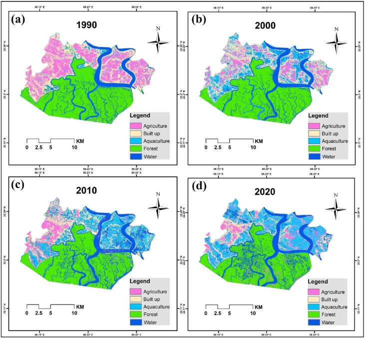

7 Week 6: Classification 1
7.1 Summary
Classification in remote sensing is a process that pixels in a remote sensing imagery are classified into different classes based on their distinctive features as identifies by human or machine (computer). Classification of pixels in imagery allows the monitoring of land use/ cover changes in both spatial and temporal sense. This summary will go through different methods of classifications and types of machine learning.
7.1.1 How?
Inductive learning – Expert Systems
- Expert user to train the model, requires human knowledge/ intelligence to solve problems
- Using decision tree for knowledge representation (form human)
Machine learning
- Without human interference, just machine itself to learn
- CART: classification and regression trees
- Random Forests: numerous classification decision trees, Bootstrapping (out of bag sample, OOB), random and limited control on development
Image classification
- Supervised: inductive learning, data testing + training, parameter settings, pixels are treated in isolation: contextual, objects, texture
- Unsupervised: computer to cluster based on the info and characteristics, the use of DBSCAN, cluster busting
- Support Vector Machines (SVM): a supervised machine learning model, identifying the optimal hyperplane to distinguish points with different classes
7.1.2 A deep dive into CART
- Classification trees + Regression trees = CART
- Gini Impurity: leaf with the lowest Gini Impurities wins = pure (pixels belong to the same class, no mixture of classes)
- Classification trees: classify data into discrete classes
- Regression trees: to decide where to subset the data, requires the calculation of sum of squared residuals (SSR), presented in numeric value not discrete classes
- Problems: overfitting with high variance and low bias
- Solutions: weakest link pruning or removing the weakest part of the model
7.2 Application
The use of classification is commonly seen where studies are aiming to monitor or identify changes in land use in terms of sptio-temporal sense, especially in relation to urban development and vegetation cover. Faruque et al. (2022) paper uses a supervised classification technique to classify land use cover in their study area – a mangrove forests in the southwest of Bangladesh. “Land Use and Land Cover” (LULC) maps are 4 different years are then created based on the classification techniques they deployed in the machine during the pre-processing stage.

It is useful in detecting the dynamic spatio-temporal change in land use without re-computing/ re-processing satellite imagery for each of the year. The overall accuracy of this supervised model is over 92%, and this research will be undoubtedly useful in monitoring humans’ activities across the mangrove forests through time. Although urbanisation did not degrade the mangrove forests areas, the agricultural practices change quite a lot as reflected by the shift from agriculture to aqua-agriculture. The LULC map provides a comprehensive understanding of how a better land-use planning can be introduced into this region to facilitates agricultural development, based on the land use changes observed in this classification study (Dhar et al. 2018).
However, supervised classification introduces some limitations 1) requires efforts on collecting and verifying the trained data set 2) biases introduced by human. We all know that machine learning could never be perfect, there must be some errors or biases included. The best practice that we can fit in is to cross-validate the model and sensitivity analysis to minimise errors (Pedro Duarte Silva 2017).
7.3 Reflections
Terms introduced during the lecture sound familiar yet difficult and complicated to me, it seems that they appeared in the QM lecture CASA0007 in the 1st term. I have to revisit the lecture for a few times for a comprehensive understanding of classification methods. I think the most confused and difficult part is the understanding of regression trees in the CART, it took awhile for me to get familiar with the concept of the calculation of SRR. Although we don’t have to completely understand the formula and the exact principle behind, it is important for me to understand the basic concepts/ take-away in order to explain the methodology in classification whenever needed e.g., dissertation (could be?) or to critically review others’ work on classification. To be honest, I did not enjoy the lecture at first as it was too much information for me to absorb within an hour or so. However, by completing this learning diary I have reviewed the lecture again together with the practical materials, it started to make more sense to me. The idea of setting up different decision trees with different leaves in the classification methods is just like making decision in our lives, we have to weight each of the element accordingly to justify if it’s right or wrong. After that the machine will learn from the previous experience again and again when they are prompt to make decision, just like human! After all, classification is not that difficult yet interesting (I think)!